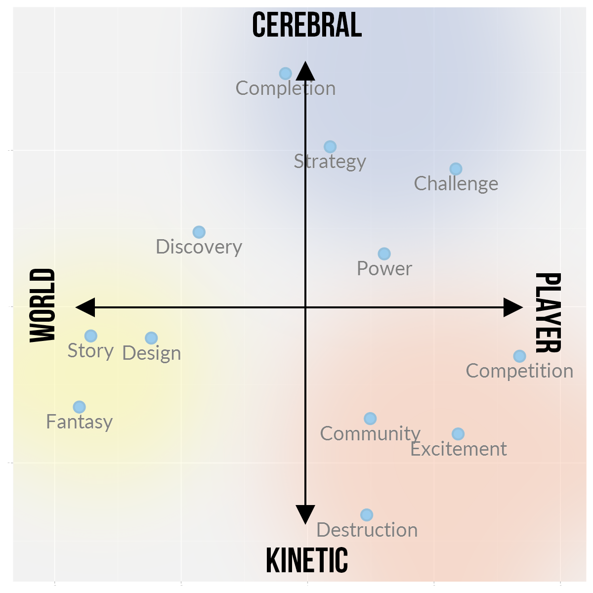

Gameplay loop and mechanics rationalizer
A tool to understand how successful small indie games engineer their loops around what their audience expects, and then to choose my own mechanics from what was learned. Point at a mark to see what it is and why it sits there, or at a motivation dot to see what it means; pick a game on the right.
The map, its two axes and its 12 motivations are Nick Yee's, from Quantic Foundry: “Gaming Motivations Group Into 3 High-Level Clusters” (21 December 2015), built from the Gamer Motivation Profile answers of over 140,000 gamers. The picture behind the chart is theirs. The games listed for each motivation come from Quantic Foundry's lists of the favourite games of each motivation's strongest scorers. Everything placed on the map is this page's own judgement, not Quantic Foundry's data.

Games
The first row is this game. The others are small indie successes, each split into its loops on the same axes; a bigger mark is a bigger part of the play. The green diamond is the game's audience, read from its Steam tags and pitch without looking at the loops.
What the picture shows for this game's pool
- The whole pool sits in the upper left and the centre. It runs from 0.86 toward World to 0.60 toward Player, and from 0.84 toward Cerebral to 0.32 toward Kinetic.
- The lower right is empty. No shape is both fast-paced and about other players.
- Anchor 1 (experiment, then plan) is a column just left of the vertical axis, from Diagnosis at the top down to the Front near the horizontal axis. Within it, the more a shape is about a deck or a path, the lower and further right it sits.
- Anchor 2 (mine, and complete) is a long diagonal band from Catalogue at the top (next to Completion) down to Base and Companion at the left (next to Design and Story). It is the most spread-out group.
- Only six marks are below the horizontal axis: Base, Companion, One trigger, Character as centre, Visit, and the run half of Prep-and-run. None is further than 0.32 toward Kinetic.
- Prep-and-run is the one shape drawn as two marks joined by a dashed line: its prep half and its run half sit half the map's width apart.
- Only three marks are clearly on the Player side: Async challenge, Same start, and the run that keeps nothing.
How the positions were made
- They are judgements, one shape at a time, on each axis separately, using the 12 motivation dots as rulers (for example "more cerebral than Discovery, less than Strategy"). Quantic Foundry publishes no position for any mechanic.
- The scale runs from 0 at the crossing of the axes to 1 at each arrowhead. A difference under about 0.1 means nothing; several marks were moved by up to 0.05 so they don't cover each other or the picture's labels.
- The numbers in 04-assess.md are a different measure: there, each shape is a list of motivations and its width is the distance between them. Here each shape is placed directly.
- The other games are placed the same way, from what is known of each game, not from play sessions or from Quantic Foundry's data. Which loops a game is split into, and how big each one is, are judgements too. Review counts are Steam's on 2026-10-02; teams and development times are in reference-games.md with their sources.
- The audience mark is made differently, and without the loops: each of a game's 20 Steam tags and each thing its pitch promises is assigned to a motivation by one fixed table, and the mark sits at the weighted middle of those motivations. A green ring marks each motivation with at least a 10% share; a bigger ring is a bigger share. Mood tags (relaxing, cozy, cute) have no motivation in the model and don't move the mark. The table and the tags are in audience-from-tags.md.
All shapes
| # | Shape | Group | World ↔ Player | Cerebral ↔ Kinetic |
|---|